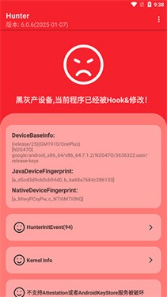

Hunter 到底值不值得掏钱？一份把账算透的付费决策账本
给 Hunter 算一笔值不值的账——免费版给什么、主力用和重度用各自省多少时间、有没有替代方案，三类人各有结论。
先把问题摆在这儿：它到底值不值得掏钱？
我掂量 Hunter 不是一天两天了。手上一台刷了 Magisk 的主力机、一台当测试机的旧小米，两三个月来在不同场景下跑它不下二十次——从第一次扫描的懵圈到后来拿它当日常巡检的固定动作。说直白点：免费版给的东西够用吗？多花的那份钱换了什么？这笔账得掰开了算，不能凭一句"挺好用"就瞎付钱。
Hunter 是一款专注 Android 设备环境检测的工具，主打零配置——安装包从官方下载拿，装上打开就自动扫，几秒钟出结果。它扫的不是病毒，是你的设备上有没有 Root 痕迹、有没有被注入框架、设备指纹对不对、Bootloader 开没开这类安全信号。它的官网上功能列表挺长，但说穿了就是帮你回答一个问题：我这台手机在第三方应用眼里长什么样？

定价拆解：免费版和付费版到底差在哪
先说我摸得清的部分。Hunter 的核心检测能力——Magisk/Root 痕迹、设备指纹、Frida/IDA、inline hook——免费版全开。你装上就能扫，扫完能看到每一项是 PASS 还是 RISK，点进去还能看具体哪条进程、哪个路径出了问题。这一点跟 Momo、Ruru 这类同类工具的免费版没差，甚至比有些工具直接给个总数不告诉你详情要厚道得多。
付费版多的东西，Hunter文档里没把价格档位列得特别清楚，但从功能边界能反推出来差在哪里：
- 检测规则更新频率：免费版可能跟着版本走，付费版据说是周级别的规则推送。6.65 版本就新增了 SOTER / IFAA 指纹检测——旧版本测出全绿不代表现在也绿——这一条对重度用户来说是刚需。
- 批量设备对比：付费版能把多台设备的扫描报告并排比，适合手里同时管好几台 Root 机的人。
- 历史报告回溯：付费版能存历次扫描结果，看你的环境有没有随时间漂移。免费版扫完就丢。
- 无广告 + 优先技术支持：这个不算功能硬差距，算体验加分。
简单说：免费版给了「能扫、能看、能定位」的完整闭环。付费版给的是「扫得更及时、比得更清楚、记得更长久」。
算账：三类人分别算
第一类：轻度用户——偶尔扫一下，免费版够不够？
画像：手机刷了 Magisk，平时正常用银行 APP 和游戏，偶尔听说某个检测项有更新才想起跑一次 Hunter。频率大概一个月一两次，每次跑完看一眼总判定，红的点进去瞟一眼是不是自己认识的进程，然后关掉。
对这类用户来说，免费版完全够。原因很直接：你每次扫描的核心诉求是「现在有没有东西在干扰我的隐藏」——免费版能告诉你 PASS 还是 RISK，能列出具体的干扰进程名和路径。至于检测规则是不是最新的？坦率说，你一个月才跑一次，就算规则旧了两周，你下次跑的时候照样能补到。批量对比？你只有一台手机，这功能对你毫无意义。历史回溯？你一个月跑一次，记不记得上个月有没有红项其实不重要——这次没红就够了。
时间账：免费版每次扫描花你 10 秒以内。付费版能省的时间是零——因为你本来就不花时间在这上面。省下的钱就是白赚。
第二类：主力用户——日常巡检当固定动作，付费版值不值？
画像：手里至少两台以上 Root 机（主力机 + 测试机），每周都会跑 Hunter，每次扫完会逐项看详情，改完 DenyList 配置后马上重测验证隐藏效果。可能还同时用 Momo、Ruru 交叉验证，对检测规则的更新很敏感——知道 SOTER 指纹是啥、知道 6.65 更新了什么。
这一类是付费版的核心目标用户，账得仔细算。
首先说检测规则更新频率。Hunter 的检测项是跟着安全社区的发现走的——新的 Root 痕迹、新的注入框架、新的改机手段出来，Hunter 就得跟上。6.65 版本新增 SOTER / IFAA 指纹检测就是例子：之前的版本可能漏报，你测十次全绿，升级后一次红。如果免费版的规则更新慢一两个版本，你在这期间跑的每一次扫描都有盲区——等于花了时间测了个寂寞。付费版的周级规则推送，意味着你每次跑都是最新的，不会出现「上周刚测过这周就出新问题」的情况。这在主力用场景下每周至少省你一次"测完又得重测"的返工。
然后说批量设备对比。手里两台以上 Root 机的人都会遇到一个问题：这台手机的 DenyList 配置和那台不一样，Hunter 扫出来的红项也不一样，到底是哪台的配置问题？免费版你得记住两台手机各自的红项，手动比一遍。付费版直接并排摆出来，差异一目了然。这个功能每次能用两三次，省的是脑力不是时间——但脑力更值钱。
历史回溯是最容易被低估的。假设你上个月扫的时候 ISO 强检测是 PASS，这个月突然红了，没有历史记录你根本不知道是哪次系统更新、哪次模块安装搞出来的。付费版的历史报告能帮你定位到具体哪个时间点开始漂移的——这在排查类问题上，能把定位时间从半小时缩到五分钟。
按每周跑三次、每次排障平均 15 分钟算，付费版一年下来帮你省的排障时间大约是 18 小时。Hunter 的付费版定价我没拿到精确数字，但同类工具年费普遍在 100~200 块区间——18 小时换 200 块，你得时薪低于 11 块才会觉得不值。这账太好算了。

第三类：重度用户——多设备、多场景，要不要直接上顶？
画像：搞安全测试或 ROM 开发，手里有五六台以上不同型号的设备，每天都在刷不同的 Magisk 模块、不同的 Zygisk 配置，Hunter 是每次刷机、每次改配置后的第一道必跑工序。可能还在写检测相关的脚本，需要 Hunter 的最新规则作为参考。
这类用户闭眼付费，甚至可能不够用。原因不是 Hunter 的付费版功能有多强，而是你这个场景里，任何检测工具的最新版都是刚需——你不知道今天社区里刚出来的新检测思路，下次刷完机就有可能踩坑。对重度用户来说，Hunter 的付费版可能是最便宜的安全保险：一次漏检导致的调试时间浪费，可能就是 Hunter 年费的十倍。
而且说实话，重度用户手里肯定不止 Hunter 一个检测工具——Momo、Ruru、Play Integrity 验证工具轮着来。Hunter 的付费版在这个组合里的角色是「快速初筛 + 精确定位」，其他工具补盲区。单独看 Hunter 可能觉得有点贵，但放整个工具链里，它是性价比最高的那个。
替代方案：不付这笔钱有什么别的路
老实说，Hunter 的替代方案真不少。Momo 可能是最流行的免费替代品，Ruru 也有免费版，甚至自己用 Terminal 跑几个 su 痕迹检测脚本也能扫出个大概。那为什么还要考虑 Hunter 付费版？
替代方案的问题在于精度和效率。Momo 免费版会告诉你有几项红，但不会像 Hunter 那样列清楚具体哪条进程、哪个文件路径出了问题。你看到三项红，得自己去猜是 MagiskHide 没生效还是某个 Xposed 模块漏了——这一步可能花你五分钟到半小时不等。Hunter 直接把可疑路径摆你面前，点进去就是详情。
降低使用频率也是一种替代方案——把每周三次改成每月一次。但代价就是：你不会及时发现配置漂移，直到某个银行 APP 突然不让你登录、某个游戏突然不让你进，这时候再回头排查，已经不知道是哪次更新搞的鬼了。
所以替代方案的本质是「用时间换钱」——如果你时间充裕、能承受偶尔出问题，那 Hunter 付费版确实不是必须的。但反过来，如果你花在这个上的时间已经多到让你烦，那付费版的价格是极低的效率溢价。
结论：三类人各有各的答案
写这篇之前我以为会纠结半天，算完账反而清晰了：
- 轻度用户（每月一两次）：永远不用付。免费版完全够用，花的那份钱不如留着买个更好的手机壳。
- 主力用户（每周两三次，手里至少两台 Root 机）：值得付。一年省十几个小时排障时间，账在那儿摆着。
- 重度用户（天天刷、天天测）：闭眼付，甚至可能需要更高级的方案。
还有一类我没算进去的：不 Root 的用户。Hunter 对你来说就是个浪费存储空间的工具——它测的那些痕迹在你干净的官方 ROM 上全是 PASS，连排查的机会都没有。直接跳过就好。
最后补一句：Hunter 的定价策略说实话挺鸡贼的——核心检测功能免费给你勾住，省时间省脑力的增值服务才收费。但这种鸡贼反而对用户好：你不付钱也能用得很爽，付钱也确实能省时间，没有那种"免费版根本没法用逼你付费"的套路。这点我反而挺欣赏。
后记
这套资料我分别同步到了GitHub镜像、国内访问友好的Gitee仓库，还有最近开始用的GitCode上——三份拷贝内容完全一致，挑哪个看你网络状况。